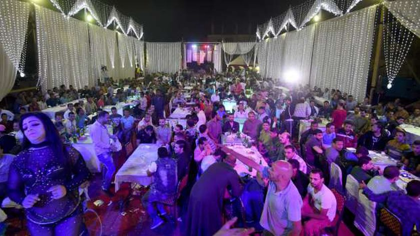

Sha'bi: An Exploration of The "Mahraganat" in Egypt

Egyptian underground music genres, including Sha’by, Rap, and Pop, have progressed exponentially over the past decades. Local Egyptian music was initially represented in the form of religious invocations, which were executed in rituals and ceremonials. However, what is currently known as Sha’by music, was initially started by Ahmed Fouad and Alaa Fifty in 2007 (Figo). The Sha’by genre started as a reformation of techno music with Egyptian instruments used in local Egyptian weddings with high BPM (beats per minute) finger cymbals. The main reason behind the popularity of Sha’by music is that it has discussed problems that the majority of Egyptians are suffering from in the language of the streets. Sha’by’s origin is similar to the renaissance of hip hop music in the United States. After the 25 January revolution, Sha’by developed into the mainstream due to its circulation amongst revolutionaries. In addition, new underground genres started to come to light, such as underground Pop with bands like Cairokee and Rap with artists like Ahmed Nasser and Zap Tharwat. The early rap scene in Egypt resembled the foreign hip-hop scene, especially in the USA. Nevertheless, a move was initiated to reform the rap scene in Egypt to innovate its style away from the blind imitation of foreign rap songs to a different fashion that uses a local style that mixes Sha’by music and foreign hip hop to express Egyptian culture.
Sha’by can be musically considered a subgenre of electronic music. However, Figo, the first known Sha’by artist, has used different instruments famous in Egyptian weddings and religious rituals, which are not similar to instruments typically being used in such genres. This genre became famous for its genuine and authentic representation of problems the people in the middle and lower classes encounter, such as relationship issues, diseases, and various social problems and political issues (Elnagar). Until now, Sha’by music is not accredited by the musicians’ syndicate (BBC). Thus, it made the genre bypass censorship, which was a reason that it became even more famous since it discussed social problems that were considered taboos. Sha’by music was commenced in Dar El-Salaam city in the start of the 2000s with Sadat and Figo’s song “Mahragan El-Salaam.” The genre became a standard for local Egyptian weddings due to its high danceability. It uses instruments that were common to Egyptians but in high BPM that can not be played manually without digital audio workstations. Sha’by music is not as it used to be; a local underground music genre restricted to slums, but it has become a mainstream genre, with Sha’by songs gaining tens of millions of online views and obtaining high popularity amongst all social strata in Egypt. While Sha’by scene originated with the basis of being detached from techno music, the Rap scene did not have the same emergence.
Works Cited
BBC. “جدل في مصر بعد منع نقابة المهن الموسيقية 19 مطرباً شعبيا من الغناء.” BBC, 18 November 2021, https://www.bbc.com/arabic/trending-59336739. Accessed 9 May 2022.
Elnagar, Islam. “Why are sha'by songs called festivals, and how did their story begin?” Alroeya, 7 March 2020, https://bit.ly/3L1i4UN. Accessed 7 May 2022.
Figo, Ahmed. “"Alsalam", the first mahragan in Egypt || Fifty Egypt - Ahmed Figo.” YouTube, 12 January 2004, https://www.youtube.com/watch?v=QnyAs2pwsR8. Accessed 8 May 2022.
Posted at Mon, 23 May. 2022 - 03:51:30 AM